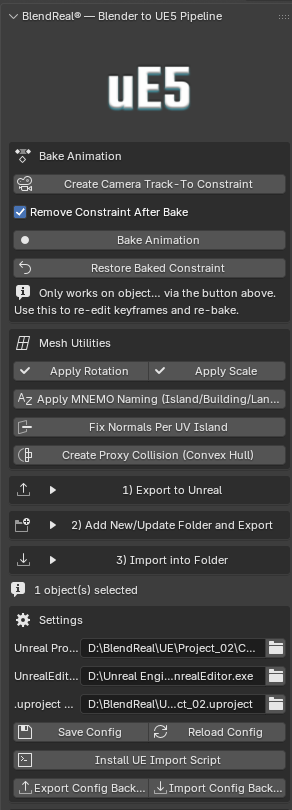
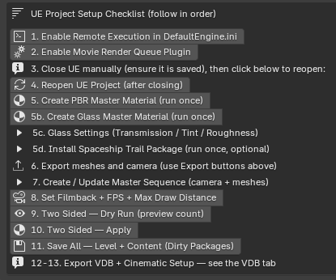

BlendReal®
Automated Blender → Unreal Engine 5 pipeline.
BlendReal® kết nối Blender và Unreal Engine 5 thành 1 quy trình tự động — export FBX, tự động bake Camera + Animation, tự tạo vật liệu PBR/Glass Master Material, chuyển volume VDB, và điều khiển trọn vẹn Ultra Dynamic Sky — tất cả chỉ từ 1 tab Sidebar (N-panel) trong Blender.
What's new?
V1.0.1
🔷 BlendReal — Pipeline Chính - Export hàng loạt FBX kèm Animation qua Sequencer hoặc FBX tĩnh, tự động áp Nanite Settings khi import (Enable Nanite Support, Explicit Tangents, Lerp UVs, Shape Preservation = Preserve Area, Preserve Area for Opacity) và Apply Two Sided, chỉ 1 click — kèm PBR Texture đầy đủ (Base Color, Metallic, Roughness, Normal, Specular, Emission, Alpha, Ambient Occlusion) - Tạo Camera với Track To Constraint chỉ 1 click, tự động bake Camera + Animation trước khi export — có thể Restore Baked Constraint để chỉnh lại chuyển động camera bất cứ lúc nào - Đồng bộ hoá Camera giữa Blender và UE - Bake animation cho mesh có gắn Constraint (Track To, Follow Path, Damped Track...) chỉ 1 click, có thể Restore lại animation gốc - Tự tạo sẵn PBR Master Material và Glass Master Material, dùng ngay trong UE - Tuỳ chọn áp trực tiếp vào UE project qua Remote Execution — bỏ qua bước import thủ công - Có hướng dẫn thiết lập sẵn để kết nối project Blender với thư mục UE project - Đổi tên Mesh hàng loạt, tự phân loại theo Island/Building/Landscape kèm số thứ tự, chỉ 1 click - Apply Rotation hàng loạt (giữ nguyên Location + Scale) - Apply Scale hàng loạt (giữ nguyên Location + Rotation) - Recalculate Normals theo từng UV Island (radial outward) hàng loạt — chính xác hơn Recalculate Normals thông thường - Tự động tạo Sequencer cho các actor có animation - Quản lý Mesh, Camera, VDB gọn gàng trong Outliner UE - 1-click batch-set: Filmback/Sensor (16:9 hoặc 9:16), Focal Length cho toàn bộ CineCameraActor, FPS Master Sequence, Max Draw Distance (kèm Force Always Loaded chống World Partition culling khi render), Motion Blur, Exposure, độ sáng Emissive cho MNEMO Window Glow
🔷 UDS — Điều Khiển Ultra Dynamic Sky
- 13 preset bầu trời dựng sẵn theo phong cách điện ảnh (Golden Hour, Overcast, Night, Blue Moon, Dust Storm...) — chọn thẳng 1 mood có sẵn
- Cinematic Setup đầy đủ: nhiệt độ màu ánh sáng, cường độ, tán xạ volumetric, khoảng đổ bóng, mật độ + độ tắt dần của sương mù
- Đồng bộ giữa Ultra Dynamic Sky và Directional Light của Blender — màu/góc xoay ánh sáng cập nhật realtime
- Lưu/tải/backup preset riêng của bạn
- Xuất thông số bầu trời sang UE project dạng JSON, hoặc Import ngược lại từ UE sang Blender, hoặc áp trực tiếp qua Remote Execution
🔷 VDB — Pipeline Volume
- Quy trình 3 bước: Load VDB vào Blender → Send VDB Files sang UE Project (copy frame + ghi kèm transform manifest) → Place VDB in UE Scene qua Remote Execution — tự convert sang SVT (Sparse Volume Texture), tạo Material Instance, spawn Heterogeneous Volume actor, gán Material/Animation/Transform tự động
- Hỗ trợ cả VDB dạng chuỗi animation đầy đủ và 1 frame tĩnh
- VDB Fill Light — Directional Light riêng chuyên chiếu sáng VDB, cường độ tự nội suy theo đường cong Ngày/Đêm bám Time of Day của Ultra Dynamic Sky (hoặc override thủ công)
- VDB Shadow Light — Directional Light riêng đổ bóng VDB xuống mặt đất, không xung đột với bóng Sun/Moon của UDS
- Point Light bám theo VDB, đồng bộ 2 chiều thật với UE — đọc animation Intensity/Location trực tiếp từ UE Sequencer về Blender
- Apply Flicker to Light — hiệu ứng nhấp nháy lửa/nổ bằng Noise Modifier (Scale/Strength/Depth) kết hợp Auto-ramp không đều (lên nhanh, tắt chậm)
- 3 preset vật liệu: 🔥 Fire / 💨 Smoke / ☁️ Cloud — tham số Density/Albedo/Blackbody/Temperature (Kelvin) tinh chỉnh theo chuẩn vật lý màu lửa thật
- Cinematic Setup — dialog thiết lập nhanh cho Console Variables (chất lượng render Heterogeneous Volumes), DirectionalLight, Material VDB, ExponentialHeightFog — tự cảnh báo nếu xung đột với hệ Sky/Fog của UDS
- Diagnose Sequencer Bindings (chỉ đọc) + Clean Orphaned Bindings — dọn dữ liệu rác nếu UE crash giữa lúc Place VDB
- Lưu/tải/xoá preset riêng cho Cinematic Setup, Material, Point Light
Yêu cầu hệ thống
- Blender: 4.4, 5.0, hoặc 5.2 (LTS) — [cần xác nhận lại:
bl_infotrong code hiện khai tối thiểu 4.5, chưa khớp với 4.4 — xem lưu ý ở đầu cuộc trò chuyện] - Project Unreal Engine 5 — [cần xác nhận version cụ thể, ví dụ UE 5.8+]
- Hệ điều hành: [cần xác nhận — chỉ test Windows hay có cả macOS/Linux]
- Các tính năng Remote Execution (áp trực tiếp material/sky/camera vào UE) cần bật Python Remote Execution trong project UE (
Edit > Project Settings > Plugins > Python) — addon có sẵn nút hướng dẫn thiết lập.
Cài đặt (Installation)
- Trong Blender, vào Edit > Preferences > Add-ons
- Bấm Install from Disk... (hoặc Install Add-on from File... ở bản Blender cũ hơn), chọn file
.zipđã tải - Tick vào ô bên cạnh BlendReal® trong danh sách Add-ons để bật addon
- Mở Sidebar trong 3D Viewport (phím
N), tìm tab BlendReal®
Nếu Blender báo addon không tương thích, kiểm tra lại đúng bản Blender đang cài có nằm trong danh sách hỗ trợ ở mục Yêu cầu hệ thống không.


Cập nhật lên bản mới
Trước khi cài bản mới, gỡ bản cũ trước (Preferences > Add-ons, mở rộng BlendReal®, bấm Remove), sau đó cài .zip mới như hướng dẫn trên rồi khởi động lại Blender.
Tính năng — 3 công cụ, 1 tab Sidebar
🔷 BlendReal — Pipeline Chính
- Export hàng loạt FBX kèm Animation qua Sequencer hoặc FBX tĩnh, tự động áp Nanite Settings khi import (Enable Nanite Support, Explicit Tangents, Lerp UVs, Shape Preservation = Preserve Area, Preserve Area for Opacity) và Apply Two Sided, chỉ 1 click — kèm PBR Texture đầy đủ (Base Color, Metallic, Roughness, Normal, Specular, Emission, Alpha, Ambient Occlusion)
- Tạo Camera với Track To Constraint chỉ 1 click, tự động bake Camera + Animation trước khi export — có thể Restore Baked Constraint để chỉnh lại chuyển động camera bất cứ lúc nào
- Đồng bộ hoá Camera giữa Blender và UE
- Bake animation cho mesh có gắn Constraint (Track To, Follow Path, Damped Track...) chỉ 1 click, có thể Restore lại animation gốc
- Tự tạo sẵn PBR Master Material và Glass Master Material, dùng ngay trong UE
- Tuỳ chọn áp trực tiếp vào UE project qua Remote Execution — bỏ qua bước import thủ công
- Có hướng dẫn thiết lập sẵn để kết nối project Blender với thư mục UE project
- Đổi tên Mesh hàng loạt, tự phân loại theo Island/Building/Landscape kèm số thứ tự, chỉ 1 click
- Apply Rotation hàng loạt (giữ nguyên Location + Scale)
- Apply Scale hàng loạt (giữ nguyên Location + Rotation)
- Recalculate Normals theo từng UV Island (radial outward) hàng loạt — chính xác hơn Recalculate Normals thông thường
- Tự động tạo Sequencer cho các actor có animation
- Quản lý Mesh, Camera, VDB gọn gàng trong Outliner UE
- 1-click batch-set: Filmback/Sensor (16:9 hoặc 9:16), Focal Length cho toàn bộ CineCameraActor, FPS Master Sequence, Max Draw Distance (kèm Force Always Loaded chống World Partition culling khi render), Motion Blur, Exposure, độ sáng Emissive cho MNEMO Window Glow
🔷 UDS — Điều Khiển Ultra Dynamic Sky
- 13 preset bầu trời dựng sẵn theo phong cách điện ảnh (Golden Hour, Overcast, Night, Blue Moon, Dust Storm...) — chọn thẳng 1 mood có sẵn
- Cinematic Setup đầy đủ: nhiệt độ màu ánh sáng, cường độ, tán xạ volumetric, khoảng đổ bóng, mật độ + độ tắt dần của sương mù
- Đồng bộ giữa Ultra Dynamic Sky và Directional Light của Blender — màu/góc xoay ánh sáng cập nhật realtime
- Lưu/tải/backup preset riêng của bạn
- Xuất thông số bầu trời sang UE project dạng JSON, hoặc Import ngược lại từ UE sang Blender, hoặc áp trực tiếp qua Remote Execution
🔷 VDB — Pipeline Volume
- Quy trình 3 bước: Load VDB vào Blender → Send VDB Files sang UE Project (copy frame + ghi kèm transform manifest) → Place VDB in UE Scene qua Remote Execution — tự convert sang SVT (Sparse Volume Texture), tạo Material Instance, spawn Heterogeneous Volume actor, gán Material/Animation/Transform tự động
- Hỗ trợ cả VDB dạng chuỗi animation đầy đủ và 1 frame tĩnh
- VDB Fill Light — Directional Light riêng chuyên chiếu sáng VDB, cường độ tự nội suy theo đường cong Ngày/Đêm bám Time of Day của Ultra Dynamic Sky (hoặc override thủ công)
- VDB Shadow Light — Directional Light riêng đổ bóng VDB xuống mặt đất, không xung đột với bóng Sun/Moon của UDS
- Point Light bám theo VDB, đồng bộ 2 chiều thật với UE — đọc animation Intensity/Location trực tiếp từ UE Sequencer về Blender
- Apply Flicker to Light — hiệu ứng nhấp nháy lửa/nổ bằng Noise Modifier (Scale/Strength/Depth) kết hợp Auto-ramp không đều (lên nhanh, tắt chậm)
- 3 preset vật liệu: 🔥 Fire / 💨 Smoke / ☁️ Cloud — tham số Density/Albedo/Blackbody/Temperature (Kelvin) tinh chỉnh theo chuẩn vật lý màu lửa thật
- Cinematic Setup — dialog thiết lập nhanh cho Console Variables (chất lượng render Heterogeneous Volumes), DirectionalLight, Material VDB, ExponentialHeightFog — tự cảnh báo nếu xung đột với hệ Sky/Fog của UDS
- Diagnose Sequencer Bindings (chỉ đọc) + Clean Orphaned Bindings — dọn dữ liệu rác nếu UE crash giữa lúc Place VDB
- Lưu/tải/xoá preset riêng cho Cinematic Setup, Material, Point Light
License & Mã nguồn
BlendReal® phát hành theo GPL-2.0-or-later (bắt buộc vì dùng API bpy của Blender). Bạn nhận được toàn bộ mã nguồn — có thể tự kiểm tra addon làm gì trước khi chạy trên máy/pipeline studio, không lo bị khoá nhà cung cấp nếu ngừng cập nhật.
Hỗ trợ
Mọi câu hỏi/yêu cầu cập nhật, liên hệ qua kênh Discord support của BlendReal® (link đang cập nhật).
Câu hỏi thường gặp (FAQ)
Addon có cần mở sẵn Unreal Engine không? Có, với các tính năng Remote Execution (áp trực tiếp material/sky/camera vào UE) cần UE project đang mở sẵn với Python Remote Execution đã bật.
Addon có tự động cập nhật khi Blender ra bản mới không? Không tự động — bản build mới sẽ được phát hành trên cùng link mua khi Blender ra version mới nằm ngoài danh sách hỗ trợ hiện tại.
Có giới hạn số máy cài đặt không? [Điền chính sách của bạn]